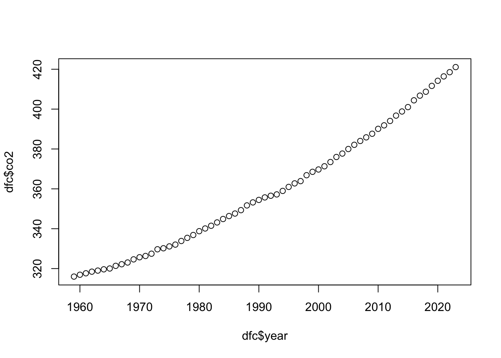
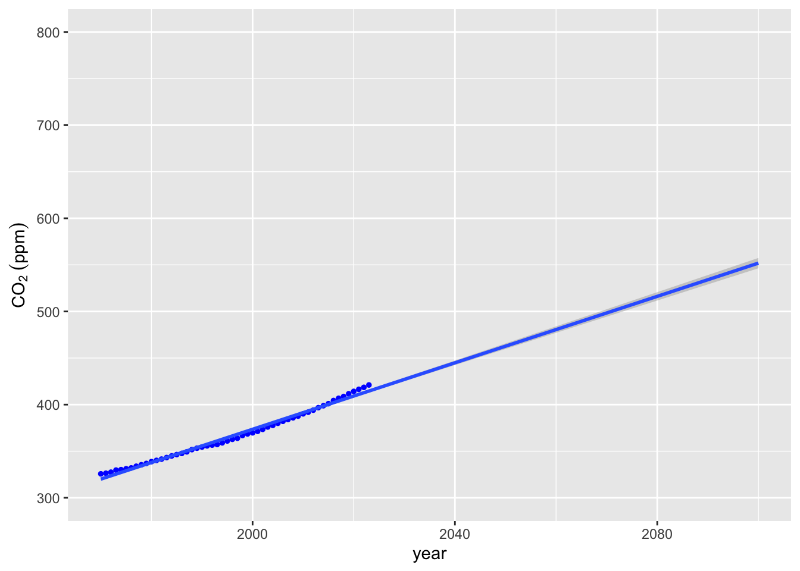
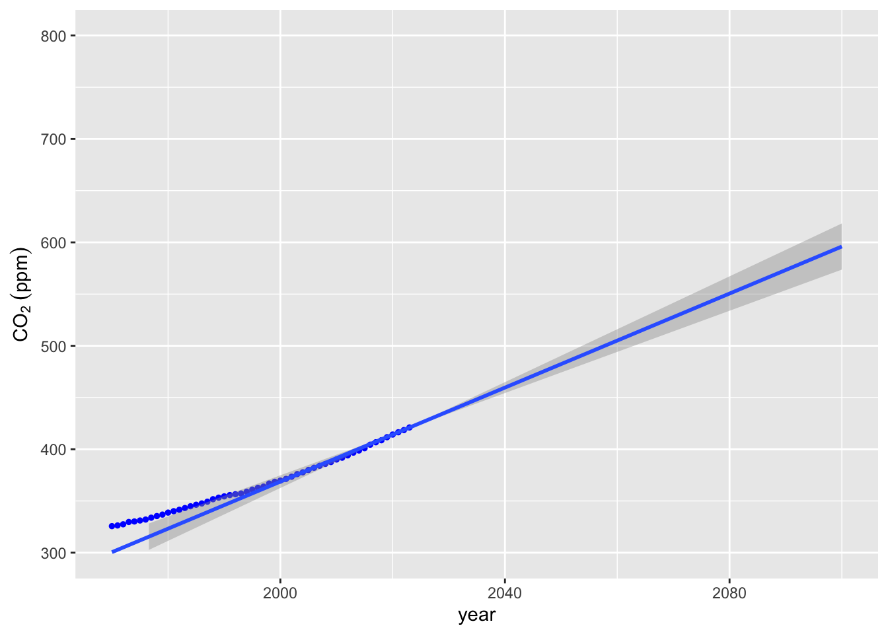
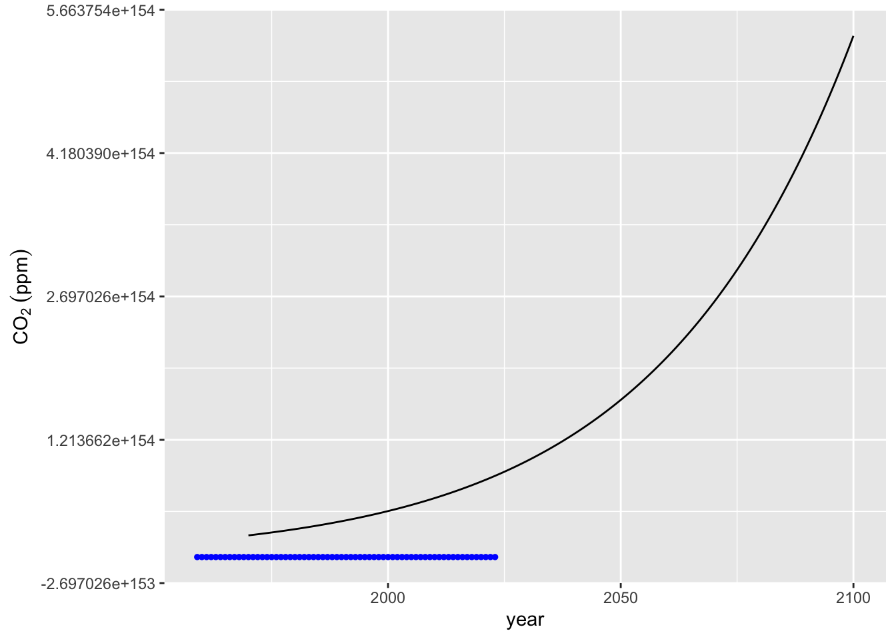
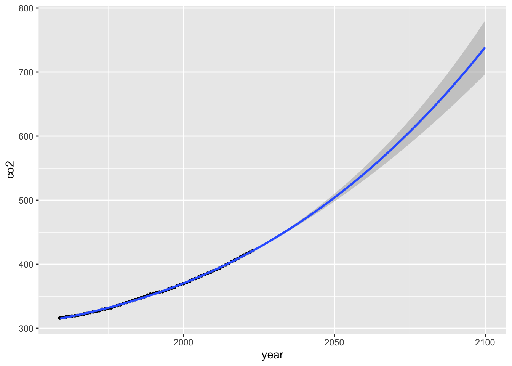
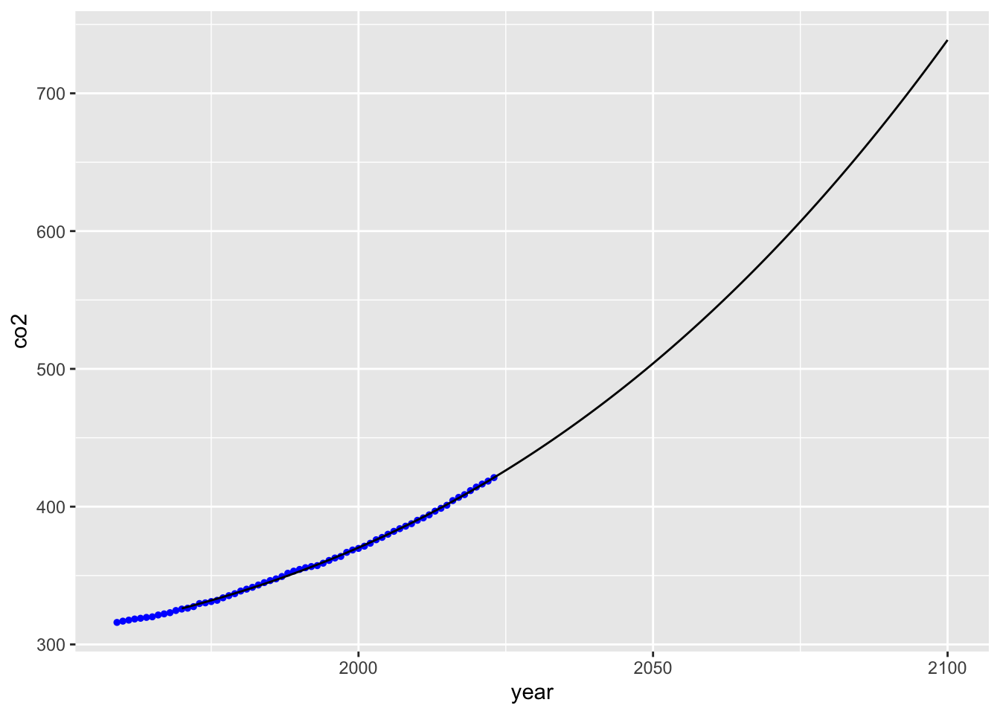
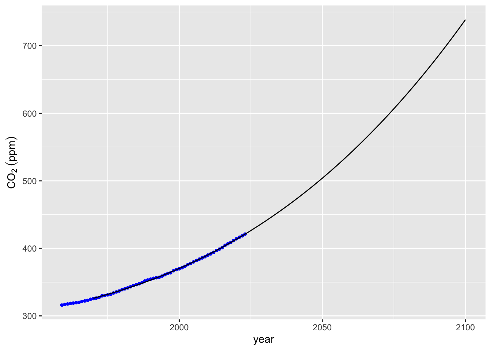
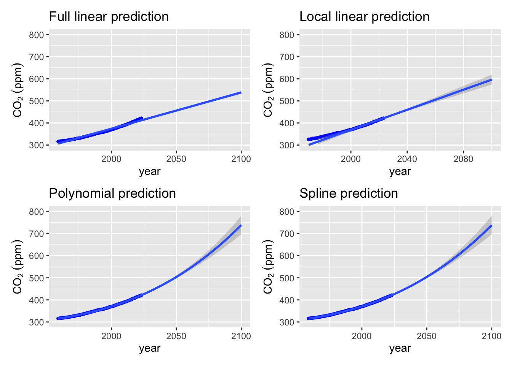

Interpolation and Extrapolation Examples
# Set global chunk options and load necessary libraries
knitr::opts_chunk$set(echo = TRUE)
library(ggplot2) # for plotting
library(tidyverse) # for data manipulation and piping## ── Attaching core tidyverse packages ──────────────────────── tidyverse 2.0.0 ──
## ✔ dplyr 1.1.4 ✔ readr 2.1.5
## ✔ forcats 1.0.0 ✔ stringr 1.5.1
## ✔ lubridate 1.9.4 ✔ tibble 3.2.1
## ✔ purrr 1.0.4 ✔ tidyr 1.3.1
## ── Conflicts ────────────────────────────────────────── tidyverse_conflicts() ──
## ✖ dplyr::filter() masks stats::filter()
## ✖ dplyr::lag() masks stats::lag()
## ℹ Use the conflicted package (<http://conflicted.r-lib.org/>) to force all conflicts to become errors##
## Attaching package: 'PolynomF'
##
## The following object is masked from 'package:purrr':
##
## zap##
## Attaching package: 'pracma'
##
## The following objects are masked from 'package:PolynomF':
##
## integral, neville
##
## The following object is masked from 'package:purrr':
##
## cross11.3 Example - CO2 at Mauna Loa Observatory
The Mauna Loa Observatory contains the longest in situ record of CO2 in the atmosphere. This dataset is ideal for demonstrating interpolation and extrapolation methods. Using this data, let’s extrapolate the CO2 level at 2100. We’ll start with linear interpolation/extrapolation using a few different methods and then we will try polynomial and splines methods.
Interpolation: Estimating values within known data range.
Extrapolation: Predicting values beyond known data range.
We’ve downloaded this data from ftp://aftp.cmdl.noaa.gov/products/trends/co2/co2_annmean_mlo.txt.
Let’s read in this data and start by visualizing it.
# Define column names and read in the dataset, skipping comments
coln <- c("year","co2","y")
mauna_loa_co2 <- read_delim("data/co2_annmean_mlo.txt",delim = " ", comment = "#",col_names = coln)## Rows: 65 Columns: 5
## ── Column specification ────────────────────────────────────────────────────────
## Delimiter: " "
## chr (1): year
## dbl (2): co2, X5
## lgl (2): y, X4
##
## ℹ Use `spec()` to retrieve the full column specification for this data.
## ℹ Specify the column types or set `show_col_types = FALSE` to quiet this message.# Convert columns to numeric types
mauna_loa_co2$year <- as.numeric(mauna_loa_co2$year)
mauna_loa_co2$co2 <- as.numeric((mauna_loa_co2$co2))
# Plot the raw data to see the trend
plot(mauna_loa_co2$year, mauna_loa_co2$co2)
11.3.1 Linear Extrapolation
Let’s build a linear model and extrapolate to the year 2100.
Pros: - Simple and interpretable - Quick to compute
Cons: - Assumes constant trend (which may be invalid for long-term projection) - Often underestimates curved growth
Instead of using the lin_interp function we wrote, we can just make linear regression model of the data.
# Fit a linear model to the entire dataset
lm_co2 <- lm(co2 ~ year, data = mauna_loa_co2)
# Create a new tibble of years to predict
pred_co2 <-
tibble(year = seq(1970, 2100, 1)) |> # sequence of years
mutate(lm_pred_co2 = predict(lm_co2, pick(year))) # predict CO2 values using the modelPlot the linear extrapolation
co2_plot <- ggplot(data = mauna_loa_co2,
aes(x = year, y = co2)) +
geom_point(
size = 1,
col = 'blue'
) + labs(y = expression(CO[2]~(ppm)))
co2_plot
## `geom_smooth()` using formula = 'y ~ x'## Warning: Removed 11 rows containing non-finite outside the scale range
## (`stat_smooth()`).## Warning: Removed 11 rows containing missing values or values outside the scale range
## (`geom_point()`).
Well over 550 ppm CO2 by 2100. But this doesn’t really fit the data very well. Perhaps we could improve a bit by using our lin_interp function on the last 2 datapoints.
11.3.2 Manual Linear Extrapolation (Last 2 Points)
Pros: - Reflects the most recent trend in the data - Very simple and intuitive
Cons: - Ignores all historical trends - Can be overly sensitive to short-term noise
# Define a simple linear interpolation/extrapolation function
lin_interp <- function(fx1,fx2,x1,x2,x3) fx1+((fx2-fx1)/(x2-x1))*(x3-x1)
# Grab the last two rows of data
lin_extrap_data <- tail(mauna_loa_co2, n = 4)
# Apply manual extrapolation to estimate CO2 in 2100
lin_interp(fx1 = lin_extrap_data[[1,"co2"]],
fx2 = lin_extrap_data[[2,"co2"]],
x1 = lin_extrap_data[[1,"year"]],
x2 = lin_extrap_data[[2,"year"]],
x3 = 2100)## [1] 590.21# Fit a new linear model using just the last two points
lm2_co2 <- lm(co2 ~ year, data = lin_extrap_data)620 ppm! That’s more than 10% higher, but does it visually fit better? We can use the geom_abline function from ggplot2 to plot a line with the right slope and intercept, although it would probably be easier to go back and make a linear model with the lin_extrap_data and use predict to make a line as we did above.
co2_plot +
geom_abline(slope = (lin_extrap_data[[2,"co2"]] -
lin_extrap_data[[1,"co2"]]) /
(lin_extrap_data[[2,"year"]] -
lin_extrap_data[[1,"year"]]),
intercept = lin_extrap_data[[1,"co2"]] -
(lin_extrap_data[[2,"co2"]] -
lin_extrap_data[[1,"co2"]]) /
(lin_extrap_data[[2,"year"]] -
lin_extrap_data[[1,"year"]])*
lin_extrap_data[[1,"year"]],
color = "grey") +
ylim(300, 800) +
xlim(1970, 2100)## Warning: Removed 11 rows containing missing values or values outside the scale range
## (`geom_point()`).
We can make a better plot providing confidence intervals using stat_smooth.
co2_plot + stat_smooth(data = lin_extrap_data, method = "lm", fullrange = TRUE) + ylim(300, 800) +
xlim(1970, 2100)## `geom_smooth()` using formula = 'y ~ x'## Warning: Removed 11 rows containing missing values or values outside the scale range
## (`geom_point()`).
11.3.3 Polynomial Fit
Pros: - Can capture curvature and nonlinear patterns - Flexible with low-degree models
Cons: - High-degree polynomials often overfit and behave wildly when extrapolating - Sensitive to data irregularities and outliers
11.3.3.1 Method 1 poly_calc
The poly_calc function provides a high order polynomial, but sometimes does not fit well.
# Use poly_calc to fit a high-order polynomial to the data
year_pred <- seq(1970, 2100)
co2_poly <- poly_calc(mauna_loa_co2$year, mauna_loa_co2$co2)
# Evaluate the polynomial at the prediction years
mauna_loa_co2_pred <- data.frame(year = year_pred, co2_poly = co2_poly(year_pred))
# Plot the high-degree polynomial fit
co2_plot + geom_line(data = mauna_loa_co2_pred, mapping = aes(x = year, y = co2_poly))
11.3.3.2 Method 2 poly inside lm
Using the poly function to define a polynomial
# Fit a more controlled polynomial model (6th degree)
m3 <- lm(co2 ~ poly(x = year, degree = 6, raw = TRUE), data = mauna_loa_co2)
summary(m3)##
## Call:
## lm(formula = co2 ~ poly(x = year, degree = 6, raw = TRUE), data = mauna_loa_co2)
##
## Residuals:
## Min 1Q Median 3Q Max
## -1.18271 -0.56983 -0.03815 0.51934 1.78748
##
## Coefficients: (3 not defined because of singularities)
## Estimate Std. Error t value Pr(>|t|)
## (Intercept) -2.663e+05 1.329e+05 -2.004 0.0496
## poly(x = year, degree = 6, raw = TRUE)1 4.248e+02 2.003e+02 2.121 0.0380
## poly(x = year, degree = 6, raw = TRUE)2 -2.257e-01 1.006e-01 -2.243 0.0285
## poly(x = year, degree = 6, raw = TRUE)3 3.998e-05 1.684e-05 2.374 0.0208
## poly(x = year, degree = 6, raw = TRUE)4 NA NA NA NA
## poly(x = year, degree = 6, raw = TRUE)5 NA NA NA NA
## poly(x = year, degree = 6, raw = TRUE)6 NA NA NA NA
##
## (Intercept) *
## poly(x = year, degree = 6, raw = TRUE)1 *
## poly(x = year, degree = 6, raw = TRUE)2 *
## poly(x = year, degree = 6, raw = TRUE)3 *
## poly(x = year, degree = 6, raw = TRUE)4
## poly(x = year, degree = 6, raw = TRUE)5
## poly(x = year, degree = 6, raw = TRUE)6
## ---
## Signif. codes: 0 '***' 0.001 '**' 0.01 '*' 0.05 '.' 0.1 ' ' 1
##
## Residual standard error: 0.7036 on 61 degrees of freedom
## Multiple R-squared: 0.9995, Adjusted R-squared: 0.9995
## F-statistic: 4.226e+04 on 3 and 61 DF, p-value: < 2.2e-16# Predict values from the new model
mauna_loa_co2_pred$co2_m3 <-
m3 %>% predict(mauna_loa_co2_pred)
# Plot the model's predictions
co2_plot + geom_line(data = mauna_loa_co2_pred, mapping = aes(x = year, y = co2_m3))
We can also use lm(poly) inside stat_smooth for nice visualizations including confidence intervals around our prediction. Within stat_smooth our formula needs to be in terms of x and y, which correspond to the variables mapped back in the ggplot call when we defined co2_plot; so looking back aes(x = year, y = co2). To expand the range of the model predictions in stat_smooth we need to add fullrange = TRUE and then use xlim to expand the x-axis.
ggplot(data = mauna_loa_co2,
aes(x = year, y = co2)) +
geom_point(size = 1) +
stat_smooth(method = lm, formula = y ~ poly(x = x, degree = 3, raw = TRUE),
fullrange = TRUE) +
xlim(1959, 2100)
11.3.4 Spline Fitting
Finally, we can use the method of splines by similarly defining a splines model using the bs (stands for b-splines, which are a type of spline) from the splines package.
Pros: - Captures local trends better than global polynomials - More stable and flexible
Cons: - Risk of overfitting if not carefully tuned - May be harder to interpret
# Use splines to fit a curve to the data
library(splines)
m_splines <- lm(co2 ~ splines::bs(year, knots = mauna_loa_co2$co2), data = mauna_loa_co2)
# Predict using the spline model
mauna_loa_co2_pred$co2_m_splines <-
m_splines %>% predict(mauna_loa_co2_pred) ## Warning in splines::bs(year, degree = 3L, knots = c(315.98, 316.91, 317.64, :
## some 'x' values beyond boundary knots may cause ill-conditioned bases# Plot spline predictions
co2_plot + geom_line(data = mauna_loa_co2_pred, mapping = aes(x = year, y = co2_m_splines))
## year co2_poly co2_m3 co2_m_splines
## 131 2100 5.394051e+154 738.7013 738.7013# Visualize spline prediction using stat_smooth
ggplot(data = mauna_loa_co2,
aes(x = year, y = co2)) +
geom_point(size = 1) +
stat_smooth(method = lm, formula = y ~ bs(x = x, knots = mauna_loa_co2$co2),
fullrange = TRUE) +
xlim(1959, 2100)## Warning in bs(x = x, degree = 3L, knots = c(315.98, 316.91, 317.64, 318.45, :
## some 'x' values beyond boundary knots may cause ill-conditioned basesNow let’s combine all of these examples together into a single figure. To do this we will use the patchwork package:
library(patchwork)
# Visualize spline prediction using stat_smooth
splines_plot <-
co2_plot +
stat_smooth(
method = lm,
formula = y ~ bs(x = x, knots = mauna_loa_co2$co2),
fullrange = TRUE
) + ylim(300, 800) +
xlim(1959, 2100) + labs(title = "Spline prediction")
# Visualize polynomial prediction using stat_smooth
poly_plot <-
co2_plot +
stat_smooth(
method = lm,
formula = y ~ poly(x = x, degree = 3, raw = TRUE),
fullrange = TRUE
) + labs(title = "Polynomial prediction") +
xlim(1959, 2100) + ylim(300, 800)
# full data linear plot
full_lm_plot <-
co2_plot +
stat_smooth(method = "lm", fullrange = TRUE) +
labs(title = "Full linear prediction")+
xlim(1959, 2100) + ylim(300, 800)
# last 2 points
local_lm_plot <-
co2_plot +
stat_smooth(data = lin_extrap_data, method = "lm", fullrange = TRUE) +
ylim(300, 800) +
xlim(1970, 2100) +
labs(title = "Local linear prediction")
full_lm_plot + local_lm_plot + poly_plot + splines_plot## `geom_smooth()` using formula = 'y ~ x'
## `geom_smooth()` using formula = 'y ~ x'## Warning: Removed 11 rows containing missing values or values outside the scale range
## (`geom_point()`).## Warning in bs(x = x, degree = 3L, knots = c(315.98, 316.91, 317.64, 318.45, :
## some 'x' values beyond boundary knots may cause ill-conditioned bases